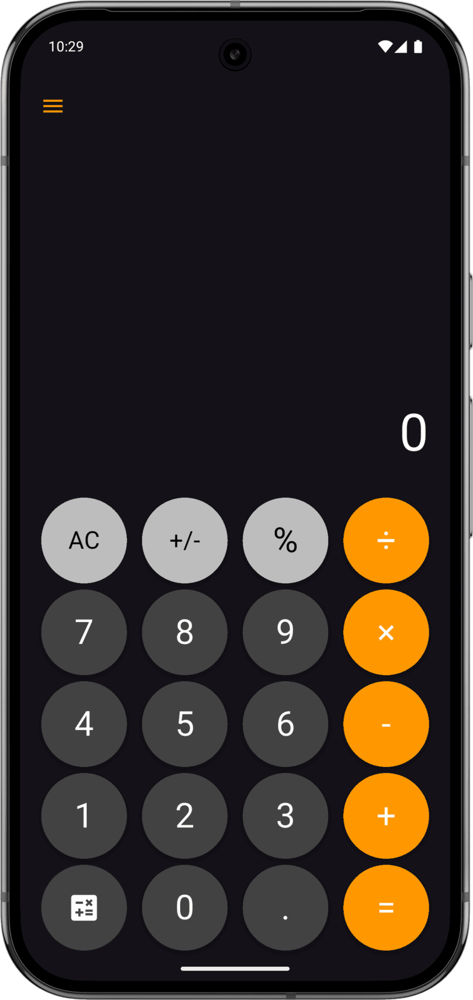

Pi Book - Mobile Application
Calculator app that finds the position of number sequences within Pi's infinite decimal expansion — fun for math lovers!
Dart
Flutter
Calculator app that finds the position of number sequences within Pi's infinite decimal expansion — fun for math lovers!
Pi Book looks like an ordinary dark-themed calculator, but every number it computes is silently checked against a million digits of π. Whenever the current expression or result exists somewhere in the decimal expansion, the app reveals it: an icon changes colour, and a long press shows exactly where the sequence is found.
The idea plays on the fact that π is conjectured to contain every finite sequence of digits — a birth date, a phone number, today's calculation. Pi Book turns that curiosity into an interactive party trick hidden inside a convincing calculator.
The position is expressed as a page, row and column, as if π were printed across pages of 48 rows of 60 digits.
A single tap toggles a persistent book view, swapping the fake status bar's clock and battery readout for the page and row numbers so the position stays on screen. The top bar imitates a real phone's status icons, so the feature stays hidden until you know the gesture.

A Flutter app for Android and iOS. The one-million-digit dataset is bundled in the app and searched on the device, and a small native Android component adapts the system overlay to the navigation mode.
Implements all app logic: expression state management, the Pi-sequence search over the bundled digit string, and the page/row/column math that turns a raw index into a "book" position.
Builds the entire UI — custom circular calculator buttons with press animations, the AnimationController-driven splash screen, and gesture handling (tap vs.
Dart package used to parse and evaluate calculator expressions via its shunting-yard parser, instead of writing a custom arithmetic evaluator.
A native MethodChannel queries the device's system navigation mode (gesture vs.